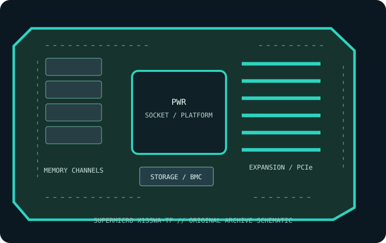

[ INDIVIDUAL COMPONENT // MOTHERBOARDS ]
Supermicro X13SWA-TF
Single-socket LGA4677 W790 workstation board for Intel Xeon W-2400/W-3400 families. This record identifies the stated model/revision; confirm the PCB label and use the matching vendor support files.

REVISION WARNING: Similar model names, board revisions and firmware may differ in CPU support, lane routing or connectors. Identify the silkscreen and assembly code before installation or firmware updates.
Specifications
| Catalog subcategory | Workstation and server boards |
|---|---|
| Exact model / era | Supermicro X13SWA-TF — Single-socket LGA4677 W790 workstation board for Intel Xeon W-2400/W-3400 families. (2023) |
| CPU and socket / SoC | One LGA4677 Intel Xeon W-2400 or W-3400 series processor, with supported model/BIOS per Supermicro list. |
| Chipset / platform | Intel W790. |
| Memory and ECC | Sixteen DDR5 ECC RDIMM sockets with up to eight channels; maximum capacity, supported rank and rate depend on CPU and DIMM configuration. |
| PCIe and form factor | E-ATX (13 × 12 in); CPU-dependent PCIe 5.0 x16 expansion: up to six slots with W-3400 class CPUs and fewer with W-2400 models; use manual slot/lane table. |
| Storage | Four M.2 PCIe 5.0 x4 sockets, two U.2 NVMe connectors and eight SATA 6 Gb/s ports; Intel RAID modes depend on interface/firmware. |
| BMC and networking | IPMI remote management supported; management is through the board’s shared LAN/IPMI arrangement rather than a dedicated separate BMC LAN jack. Also 10GbE LAN. |
Compatibility and revision notes
Xeon W-2400 and W-3400 are separate lane/memory configurations; select CPU using Supermicro’s support list, BIOS and slot matrix. Populate ECC RDIMMs in the documented channel order. Confirm U.2 cable, E-ATX chassis, power and shared-LAN/IPMI networking.
Socket type, connector shape, chipset branding and CPU family alone do not establish compatibility. Confirm the exact CPU support list, minimum BIOS, ECC/DIMM type and population, shared PCIe/storage lanes, power inputs and dimensions in the linked model-specific vendor documentation.
Preservation and repair
Record the board revision, serial label, BIOS and BMC versions, MAC addresses, attached risers/cables and test conditions before servicing. Use the vendor's socket procedure, ESD-safe handling and correct chassis airflow; do not cross-flash firmware from a related SKU.
Photograph PCB labels, connector condition and accessories before cleaning. Keep BMC access credentials in secure inventory, and never power the board with loose conductive hardware beneath it.
Sources & further reading
- Supermicro X13SWA-TF — manufacturer specifications and product referencePrimary product reference for platform, board configuration and feature summary.
- Supermicro X13SWA-TF — manufacturer support, manual and firmware resourcesUse the exact revision-specific manual, CPU support list and firmware package before service.
Manufacturer model-specific documentation takes precedence. Confirm details for the exact printed board revision.